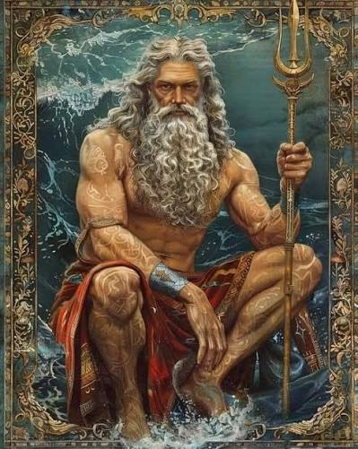

A mitologia grega é o conjunto de histórias, mitos e lendas criados na Grécia Antiga para explicar a origem do mundo, os fenômenos da natureza e a vida dos deuses e heróis.

Os Principais Deuses Olímpicos
- Zeus O rei dos deuses, mestre dos céus e do trovão.
- Poseidon O deus dos mares, dos terremotos e dos cavalos.
- Hades O senhor do submundo e do reino dos mortos.
- Atena A deusa da sabedoria, da estratégia e da justiça.
- Ares O deus da guerra e da violência.